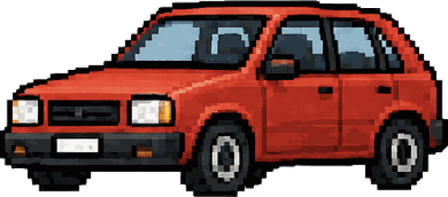
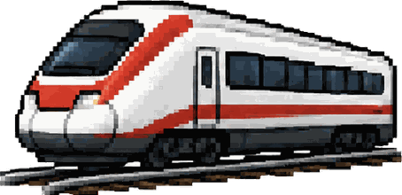
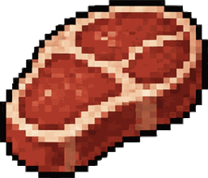
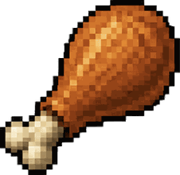
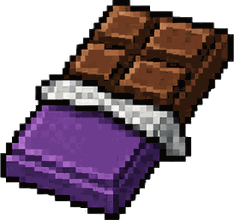
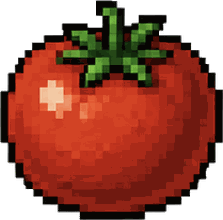

Wähle eine Strecke – oder schiebe den Regler auf eine eigene Distanz. Die Balken zeigen, wie viel Treibhausgas eine Person auf dieser Strecke verursacht.
Klick auf einen Balken, um zu sehen, was dahintersteckt. Angezeigt werden nur Verkehrsmittel, die auf dieser Distanz realistisch sind.
Der offizielle Wert rechnet mit dem Schweizer Durchschnitt von 1,6 Personen pro Auto. Wer allein fährt, verursacht deutlich mehr – wer zu viert fährt, deutlich weniger. Probier es aus:
Klick Lebensmittel an, um sie auf den Teller zu legen – nochmals klicken legt eine weitere Portion dazu. Unten siehst du, wie viel Treibhausgas dieser Teller verursacht und wie weit man dafür Auto fahren könnte.
Klick auf einen Balken für die Erklärung. Mit dem Umschalter siehst du den gleichen Vergleich pro üblicher Portion – das ändert die Rangliste deutlich.
Warum stossen zwei gelbe Busse pro Person so unterschiedlich viel aus? Und warum ist ein kurzer Flug pro Kilometer schlechter als ein langer?
Ein Stadtbus fährt im Schnitt mit 10 Personen, ein Reisecar mit 21. Derselbe Fahrzeugtyp, aber pro Person 156 g gegen 61 g pro Kilometer. Ein Zug mit 207 Personen verteilt seinen Verbrauch auf so viele Köpfe, dass fast nichts übrig bleibt.
Das ist der wichtigste Hebel überhaupt: Nicht das Fahrzeug ist entscheidend, sondern wie voll es ist.

Die Zahlen sind keine Auspuffwerte. Sie enthalten die Herstellung des Fahrzeugs, die Batterie, die Förderung und Raffination des Treibstoffs sowie den Bau von Strassen, Schienen und Flughäfen.
Darum ist ein E-Auto auch nicht bei null: Der Strom ist sauber, die Batterie in der Produktion nicht.

Ein E-Auto kommt mit dem Schweizer Strommix auf 93 g, mit reinem Ökostrom auf 79 g. Der Schweizer Fernverkehr fährt fast vollständig mit Wasserkraft – darum 7 g.
Derselbe ICE in Deutschland kommt auf 34 g, weil dort mehr Kohle- und Gasstrom im Netz ist. Gleiche Technik, anderes Land, fünffacher Wert.
Start und Steigflug verbrauchen am meisten – auf einer kurzen Strecke verteilt sich dieser Aufwand auf wenige Kilometer. Darum liegt die Kurzstrecke bei 350 g, die Langstrecke bei 263 g.
Dazu kommt die Höhenwirkung: Kondensstreifen und Stickoxide in grosser Höhe heizen zusätzlich auf. Sie ist in diesen Zahlen bereits eingerechnet.
Gramm CO₂-Äquivalent pro Personenkilometer. «CO₂-Äquivalent» heisst: Alle Treibhausgase werden auf die Wirkung von CO₂ umgerechnet.
| Verkehrsmittel | g CO₂-eq / Pkm | Auslastung |
|---|
Der Fernzug (7 g) liegt unter dem Velo (8 g). Das Velo ist nicht bei null, weil der Mensch die Energie zum Treten aus dem Essen holt – und Lebensmittel verursachen bei Anbau, Transport und Kühlung Treibhausgase. Zu Fuss gehen ist aus demselben Grund ebenfalls nicht ganz gratis.
Und der Stadtbus (156 g) schneidet schlechter ab als das E-Auto (93 g). Der Grund ist wieder die Auslastung: Ein Bus fährt am Sonntagmorgen genauso wie im Feierabendverkehr, und der Schnitt liegt bei rund zehn Fahrgästen.
Warum verursacht ein Kilogramm Rindfleisch 150-mal so viel wie ein Kilogramm Rüebli? Es sind vier ganz andere Mechanismen als beim Reisen.

Rinder, Schafe und Ziegen verdauen Gras mit Hilfe von Bakterien im Pansen. Dabei entsteht Methan – ein Treibhausgas, das über 100 Jahre gerechnet rund 28-mal so stark wirkt wie CO₂. Eine Kuh rülpst pro Tag etwa 300 Liter davon.
Darum liegen Rind, Käse und Butter ganz oben. Poulet und Schwein haben keinen Pansen und darum kein Methanproblem.

Jedes Tier frisst mehr, als es an Nahrung liefert. Beim Poulet braucht es rund 3 kg Futter für 1 kg Fleisch, beim Rind je nach Haltung 7 bis 25 kg. Alles, was auf dem Acker für dieses Futter passiert – Dünger, Diesel, Bewässerung – steckt am Ende im Fleisch.
Deshalb sind pflanzliche Lebensmittel fast immer günstiger: Sie überspringen den Umweg über das Tier.

Wo für Kakao, Soja oder Weideland Regenwald gerodet wird, gibt der Boden jahrzehntelang gespeicherten Kohlenstoff frei. Diese Landnutzungsänderung ist bei Schokolade und Kaffee der grösste Einzelposten – grösser als Anbau, Verarbeitung und Transport zusammen.
Schokolade aus zertifiziertem Anbau ohne Rodung liegt darum deutlich tiefer als der Durchschnittswert von 19 kg.

Der Transport macht bei den meisten Lebensmitteln nur wenige Prozent aus – ein Containerschiff bewegt eine Tonne Bananen fast gratis um die halbe Welt. Entscheidend ist, wie etwas wächst.
Eine Schweizer Tomate aus dem beheizten Gewächshaus im März kann mehr verursachen als eine spanische Freilandtomate im August. «Regional» ist nur dann besser, wenn es auch saisonal ist.
Kilogramm CO₂-Äquivalent pro Kilogramm Produkt, weltweiter Medianwert – und daneben, was eine übliche Portion ausmacht.
| Lebensmittel | kg CO₂-eq / kg | pro Portion |
|---|
Ein Rindssteak von 150 g verursacht rund 9 kg CO₂-eq. Das entspricht 40 km im Benzinauto – ungefähr Aarau–Zürich und zurück. Für dieselbe Menge Treibhausgas könnte man rund 280 Rüebli essen.
Umgekehrt gilt aber auch: Wer einmal weniger fliegt, spart mehr als ein ganzes Jahr Vegi-Menüs. Ein Flug Zürich–New York und zurück liegt bei rund 3'200 kg – das sind über 350 Rindssteaks.
Hauptquelle: KBOB / BAFU / astra «Ökobilanzdaten im Baubereich – Transportsysteme» (2022), Tabelle 2.2. Diese Faktoren beruhen auf dem UVEK-Ökobilanzdatenbestand und den mobitool-Faktoren und sind der Schweizer Referenzwert.
Velo und E-Bike: mobitool-Faktoren, zitiert nach SBB (2024).
Schweizer Pro-Kopf-Emissionen: BAFU, Treibhausgasinventar – 4,5 t CO₂-eq pro Kopf im Inland (2024). Der Fussabdruck inklusive Ausland liegt bei rund 15 t pro Kopf (2023).
Kreuzfahrtschiff: geschätzt. Es gibt keinen offiziellen Schweizer Faktor. Die Umweltberatung Luzern rechnet damit, dass eine Kreuzfahrt pro Kilometer mehr als das Doppelte eines Langstreckenflugs verursacht. Der Wert schwankt stark je nach Schiff, Reisestandard und Auslastung – deshalb ist er im Diagramm als Schätzung markiert.
Motorrad: Der offizielle Faktor bezeichnet einen «Scooter, Benzin». Ein grösseres Motorrad liegt höher.
Lebensmittel: Poore & Nemecek, «Reducing food’s environmental impacts through producers and consumers», Science 360 (2018), aufbereitet von Our World in Data. Verwendet werden die weltweiten Medianwerte über rund 38'700 Betriebe in 119 Ländern. Achtung: Man findet für Rindfleisch auch die Zahl 99,5 kg – das ist der Mittelwert inklusive Verluste in der Lieferkette, nicht der Median.
Wichtig für den Vergleich: Die Reisezahlen sind Schweizer Werte, die Lebensmittelzahlen sind weltweite Durchschnitte. Schweizer Produktion liegt bei manchen Produkten tiefer – Rindfleisch aus der Schweiz stammt grösstenteils aus Milchviehherden und kommt eher auf 20 bis 25 kg statt 60 kg.
Pizza und Schoggikuchen sind eigene Berechnungen aus den Zutatenwerten und deshalb als Schätzung markiert. Die Rechnung steht jeweils im Detailfenster.
Jede Frage einmal beantworten. Die Auflösung erscheint sofort.